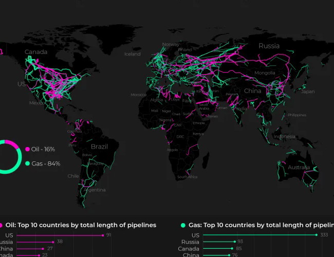
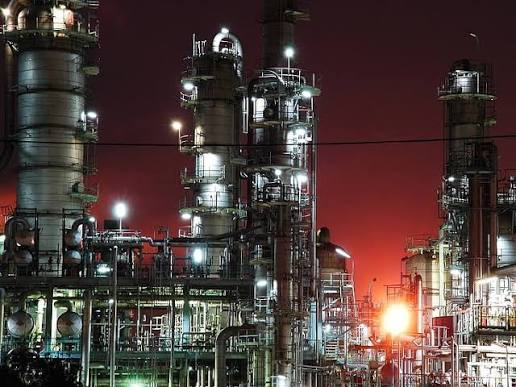

Energy Notes
روایتهای فارسی از اقتصاد و صنعت انرژی؛ از میدان و سکو تا خط لوله و پالایشگاه.
روایتهای فارسی از اقتصاد و صنعت انرژی؛ از میدان و سکو تا خط لوله و پالایشگاه.

شرکتها، کشورها و صاحبنظرانی که مسیر تصمیمها و سرمایهگذاریهای انرژی را شکل میدهند.
شرکتها کشورها صاحبنظران ورود به اطلسروایتی از گزارش مرکز پژوهشهای مجلس دربارهٔ سهم بالای نفت کوره در پالایشگاههای ایران؛ مسئلهای که از جنس نفت خام شروع میشود و به خوراک، فناوری و تأمین مالی میرسد.
مطالعهٔ مقالهاز شناسایی مخزن و حفاری تا توسعهٔ میدان و تولید نفت و گاز.
مشاهدهٔ یادداشتهاجمعآوری، انتقال و ذخیرهسازی نفت و گاز؛ زیرساختهایی که تولید را به بازار وصل میکنند.
مشاهدهٔ یادداشتها
03 / DOWNپالایش نفت و گاز و تبدیل آنها به سوخت و محصولات مورد نیاز بازار.
مشاهدهٔ یادداشتها